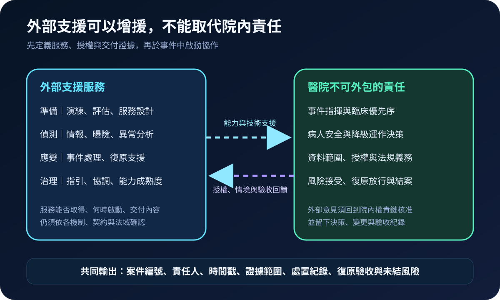
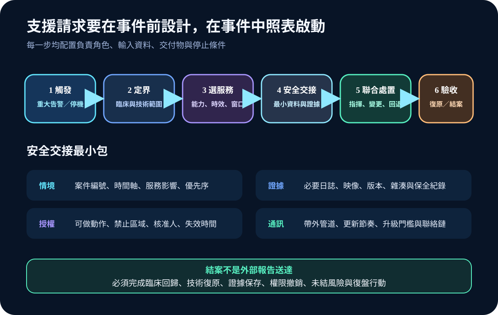
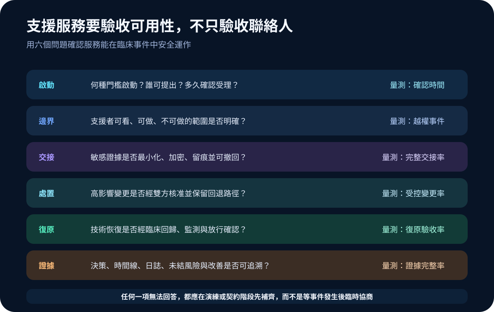

醫療資安國際觀察 · 2026-10-06
醫院如何接住外部資安支援：從服務目錄到安全交接驗收
作者：Dr. William｜醫療資訊與資安治理實務工作者
外部資安支援能補足鑑識、威脅分析與復原能力，但若醫院沒有預先定義啟動門檻、資料授權、臨床責任與結案條件，事件期間仍會卡在「找得到人、交不出證據、下不了決策」。
名詞解釋：支援中心、服務目錄與安全交接
資安支援中心是提供準備、偵測、應變或治理協助的協作機制。服務目錄列明可取得的能力、適用條件、聯絡窗口、時效與交付物。安全交接則是把最小必要的事件情境、日誌、系統版本與授權範圍交給支援者，同時保留加密、時間戳、證據保全及撤銷紀錄。
國際現況與適用邊界
ENISA 於 2026 年 7 月 22 日公布醫院與醫療服務提供者資安支援中心的首階段工作，服務目錄涵蓋準備、偵測、應變與治理，並透過三年期合作協議推進共同服務。歐盟醫療資安行動計畫則以預防、偵測、應變復原與嚇阻為主軸，規劃早期預警、事件應變服務與跨境協調。
上述機制服務歐盟政策與會員國協作，不代表台灣醫療機構可直接取得相同服務，也不是台灣的法定事件流程。NIST SP 800-61 Rev. 3 提供的是事件應變與風險管理整合方法，同樣需依各院規模、系統、契約與主管機關要求調整。
台灣適用原則：可借鏡「先有服務目錄、再有安全交接」的設計，盤點可用的主管機關、CERT、MSSP、雲端、設備商、鑑識與法律資源；通報義務、醫療決策及個資處理仍依台灣制度辦理。
對台灣醫療機構的影響
支援來源愈多，協作邊界愈需要清楚。醫院應把外部單位接進既有事件指揮，而不是另開一條無人核准的技術通道。服務準備度可由四項能力判定：是否能在時限內受理、是否了解臨床情境、是否能安全取得證據、是否能交付可驗收的處置與復原結果。
規劃：先建立服務清冊與責任矩陣
範圍可涵蓋鑑識、惡意程式分析、威脅情報、雲端調查、身分復原、備份還原、醫療設備支援及事件溝通。每項服務至少記錄啟動門檻、24 小時窗口、法域、資料位置、次處理者、可做與禁止動作、回應時效、費用條件、交付格式及退場方式。角色至少包含事件指揮、資安、資訊、醫工、臨床、法務、個資與採購。
實作：六步形成外部支援閉環
- 觸發：依重大告警、臨床停機、資料外洩疑慮或關鍵系統失陷啟動。
- 定界：先確認服務影響、資產、時間軸與病人安全優先序。
- 選服務：依能力、時效、法域與利益衝突選擇支援者。
- 安全交接：只提供必要資料，使用受控管道並記錄雜湊、保管鏈與授權期限。
- 聯合處置：高影響變更由院內核准，保留回退與帶外通訊。
- 驗收結案：完成臨床回歸、監測、權限撤銷、證據保存與改善追蹤。

風險：快速增援也可能擴大事件面
常見失敗包括共用管理帳號、未限制遠端工具、把完整資料庫交給外部團隊、證據傳輸無雜湊、外部建議直接變更臨床系統、支援者再轉包而未告知，以及技術恢復後未做臨床回歸。緩解方式是限時最小權限、跳板與會話記錄、資料最小化、雙人核准、次處理者揭露、變更回退及結案撤權。

可執行清單
- 是否有一份可用的外部支援服務清冊與 24 小時窗口？
- 每項服務是否標示法域、資料位置、次處理者與允許動作？
- 是否準備最小交接包、加密管道、雜湊與保管鏈格式？
- 高影響變更是否需要院內核准並保留回退方案？
- 復原是否同時完成技術測試與臨床回歸？
- 結案是否撤銷外部權限並追蹤未結風險與改善期限？
來源
- ENISA｜First steps forward for the implementation of the health action plan（發布：2026-07-22；查閱：2026-10-06）
- European Commission｜European action plan on the cybersecurity of hospitals and healthcare providers（發布：2025-01-15；查閱：2026-10-06）
- NIST｜SP 800-61 Rev. 3: Incident Response Recommendations and Considerations for Cybersecurity Risk Management（發布：2025-04-03；查閱：2026-10-06）
內容說明
本文依健康台灣深耕計畫相關治理內容整理，並參考 ENISA、歐盟委員會與 NIST 公開資料，提出外部支援服務清冊、安全交接、聯合處置及復原驗收框架；不把歐盟政策或美國指引視為台灣法定義務，也不取代主管機關公告、院內事件計畫、契約、法律意見或個案病人安全評估。